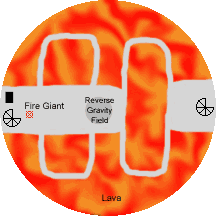
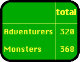
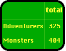
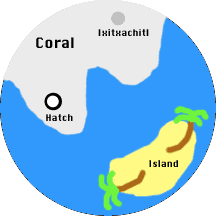

Round 17

Kaerick and Chaden had seen the rest of the party fall upwards through the hole in the ceiling. Having healed most of the damage from the giants boulders, the two decided to try to rejoin their companions. They prepared to make a run for it: Kaerick cast Haste, while Chaden cast True Strike.
Round 18
Kaerick took position on the ledge to provide cover fire, while Chaden dashed halfway around the narrow bridge to the far platform.
Round 19
Chaden made it the rest of the way and took position on the central landing. Both women caught sight of the Fire Giant peeking around the edge of the sarcophagus.
Round 20

The Fire Giant stepped out from behind the chest. The monster looked less damaged, and had most likely quaffed a few healing potions while hiding. Kaerick plunked an arrow into the giant's shoulder, and Chaden also landed a hit. The Giant reached for a boulder.
Round 21
The Fire Giant chucked a boulder all the way across the tower, barely missing Kaerick. The boulder had been deflected upwards by the reverse gravity field, allowing her to dodge out of the way. Kaerick thought better of trading blows with a giant, and ran towards the walkway.
Chaden kept the foe busy by firing arrows at it, though the unusual gravity sent all of her shots off target.
Round 22

The Giant flung another boulder to try to knock Kaerick off the walkway and into the sea of fire, but underestimated her Hasted speed. The boulder soared past her on the right. When she reached the platform Kaerick dove straight for where she estimated the reverse gravity field to be, falling upwards but careening off the edge of the hole in the ceiling. She tumbled head over heels and landed hard, knocking herself unconscious face down in the water.
Chaden landed one final arrow, but then broke her bowstring. She hopped into the gravity field, landed on the ceiling, gave the giant the one finger salute, and dove gracefully into the water.
Round 23
Determined not to lose a second party member, Grapthar and Katriana waded into the water to save Kaerick. Chaden made her swim check, surfaced, and swam toward her companion. Edwin attempted to use Mage Hand (one of his four remaining spells) to flip Kaerick face up, but the force was insufficient to move her.
Round 24
Chaden reached Kaerick and flipped her over. Katriana cast Cure Light Wounds to bring her hit points back above zero. The adventurers dragged Kaerick back to dry land.
The Narrator
With Kaerick and Chaden safely ashore, the party took stock of their situation. Seremak was dead, Kaerick badly wounded, and everyone else hurt to greater or lesser degree. Katriana had used up every spell slot she had, either during the multiple combats or for healing afterwards.
Edwin cast Clairvoyance, one of his three remaining spells. He sited it fifty feet above the staircase seen at the far end of the fire level, trying to get a glimpse of what they would face the next day. Unfortunately the spell was blocked: there is some sort of anti-magic field surrounding the walls of the tower, though which magic cannot pass.
The Next Day

Katriana cast Last Breath on Seremak. The Unguent of Timelessness having slowed the deterioration of Seremak's body, the spell was sufficient to recall his soul. Katriana then healed most of the damage he had sustained the previous day.
Edwin cast Arcane Eye, sending it in a circular search pattern around the water level of the tower. The Dinicythis had not been alone in the water level: there were approximately a half dozen ray-like creatures swimming above the coral reef. The Eye also located a circular hatch in the coral, which presumably led upwards to the next level of the tower. In the minute or so remaining the Eye rushed to the Fire level, finding the giant dozing next to the chest it had been guarding. What had appeared to be a staircase on this level was actually just a stone column which led nowhere, explaining why Edwin's Clairvoyance had failed.
A long time ago in this very dungeon
| Fire Giant: | Health plan? |
| Galap-Dreidel: | All the healing potions you can fit in your belt pouch. |
| Fire Giant: | Vision plan? |
| Galap-Dreidel: | There's a bit of a hangup there: you have Darkvision. I'll need to hire a few more minions to qualify for the Blue Dross large dungeon health plan for that to be covered. I promise, as soon as possible I'll make good on it. |
| Fire Giant: | Work rules? |
| Galap-Dreidel: | Its the standard Monstrous Union contract. Adventurers will only be allowed into the tower between the hours of 8 and 5. If they happen to show up during your lunch break, you are not required to fight them. |
| Fire Giant: | Sounds good, where do I sign? |
The Narrator
After buffing up with Fire Shield and other spells, Edwin used Dimension Door to transport himself, Seremak, Grapthar, and Chaden to the platform a short distance in front of the fire giant while Katriana flew back in eagle form. Catching the (now wakeful) giant by surprise, Edwin cast Cone of Cold while Chaden rained down a Hail of Stone. Grapthar and Seremak charged forward to carry the attack to the giant, which barely managed to draw its sword before succumbing to the hail of whoop-ass.
Chaden checked the chest for traps, then opened it. It held a huge number of copper pieces, far too many to transport. Buried amidst the coinage was a magic ring and a beautifully worked and bejeweled crown. The ring was later identified as a Ring of Feather Falling, while the crown is not magical but quite valuable. The giant itself had no treasure, though it had a large number of empty vials in its belt pouch.
Katriana took off for the water level. Edwin cast Feather Fall, and everyone stepped into the reverse gravity field to fall back upwards.
Cleric Ixitxachitl are commonly encountered, and one will generally be the leader of all but the smallest groups of such creatures.
Katriana
Control Water, properly applied, is an amazing spell.
The Narrator
There were ten Ixitxachitl altogether, one clearly larger than the rest (most likely a cleric). Using the aforementioned Control Water Katriana lowered the sea level by 16 feet in a cube fully 80 feet on a side. The Ixitxachitl, finding themselves suddenly beached atop the coral reef, flopped about ineffectively. Katriana's spell continued for over an hour, by which time the Ixitxachitl had suffocated and their lair was looted of valuables. Said loot consisted of:
The Buffs
Fini Side Quest
Katriana, Kaerick, and Grapthar swam through the watery tunnel and made ready in the small alcove on the far side. Katriana used Stone Shape to mold a wide ramp into the room, allowing the three to charge in. Simultaneously, Edwin used another Dimension Door to teleport himself, Seremak, Rai and Chaden directly in front of the Ghost Gem. Edwin cast Wall of Stone to encase it, but the wall abruptly stopped two feet off the floor. The Gem was protected by some sort of force shield. Katriana attempted Dispel Magic, but the shield was unimpressed by her effort.
Seremak immediately attacked the force field, inflicting 30 points of damage but taking 30 points himself. The shield flared red with each hit. Chaden hit the force field with arrows, but it glowed blue and Chaden took no damage (the field could only be damaged by melee attack). Suddenly an overwhelming flash of white light enveloped Seremak, Rai, Chaden, Kaerick, and Grapthar. Grapthar and Zanos (Katriana's snake) failed their Will saves and were instantly disintegrated, while Rai used a Fate point to avoid a similar effect. Everyone who survived was nonetheless bleached completely white, including all of their equipment.
Edwin hit the force shield with his oft-forgotten dagger, inflicting a single hit point of damage. Seremak's final attack shattered the protective field, and Edwin grabbed the gem. Its disintegration attacks ceased.
Katriana gathered up some dust from Grapthar and Zanos, then everyone linked hands to activate the amulet provided by the Seer.
Seremak requested permission of the Duke to speak to his party members. The Duke, though anxious to receive the Ghost Gem, assented. Seremak revealed that he had been sent to this plane to recover a Soul Gem, a powerful artifact of evil which had escaped its prison. He was certain that the Ghost Gem the party had just recovered was in fact the escaped Soul Gem. A Soul Gem is dangerous to possess, as it will eventually corrupt its possessor. (Edwin, holding the gem in both hands, looked askance at it and hiccuped).
Seremak, aided by Edwin's surreptitiously cast Eagle's Splendor, explained this to the Duke and the Seer. There were seven Soul Gems in total, and in antiquity all seven had been possessed by a powerful warrior of good. Even he had eventually been dominated by their power, and the Soul Gems were sealed away in an extradimensional prison in Sigil. One of the gems somehow escaped this prison a few months ago, and Seremak was sent to retrieve it.
"But the Ghost Gem has remained in the Tower of Inverness for ten thousand years!" came the rejoinder. Edwin, who has far more ranks in Knowledge(The Planes) than is healthy for such a small person, thought that the fabric of reality could have changed several months ago when the Soul Gem entered the world. The Tower of Inverness, and all of the ancient legends surrounding it, could have spontaneously sprung into being. Indeed, the Seer said he had only come across the moldy tome detailing its history several months prior.
The sudden rearrangement of the Throne Room seemed a similar effect, though the Duke and Seer both claimed it had always been thus (and recited the same tales Katriana knew, of a previous Mad Duke who built it). Edwin believed that it was their isolation in the demi-plane of the Ghost Tower which partially protected the adventurers from the warping of reality, allowing them to notice the changes.
The Duke agreed to allow Seremak to return the Soul Gem to its prison. Seremak and Kaerick departed immediately.